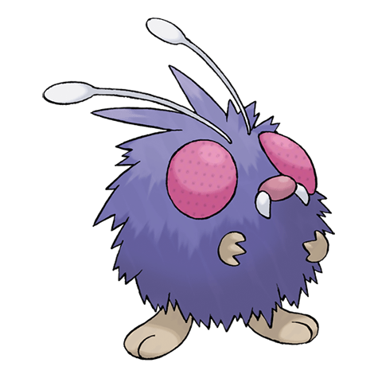
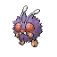
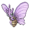

Назад
Венонат

Венонат — Покемон 1 поколения под номером 48 в Покедекс. Обитает он в регионе Канто и относится к Ядовитому и Жучиному типу. Тело Веноната покрыто шерстью из жёстких волос, защищающих его тело. Большие глаза Покемона помогают обнаружить даже самую маленькую добычу.
Тип:
Жук
Ядовитый
Эволюция

# 048 Венонат
=>

# 049 Веномот